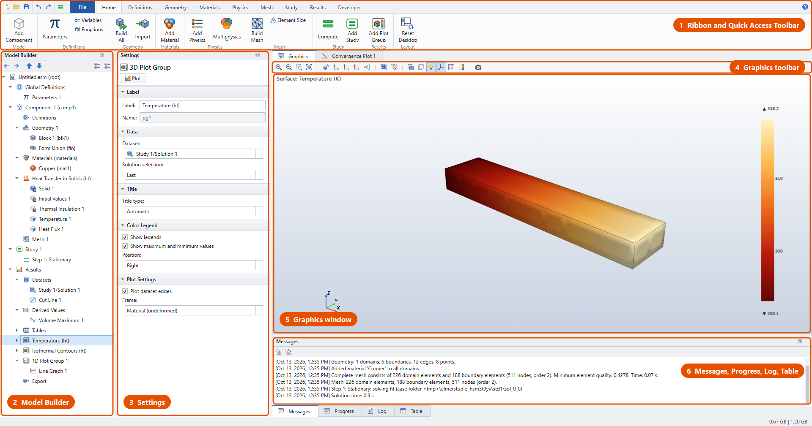
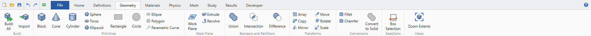
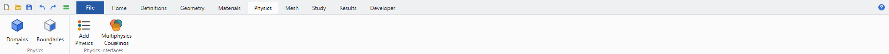
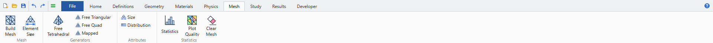
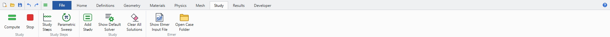
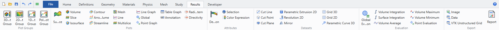

The desktop
The Elmer Studio desktop has the same layout as COMSOL’s. On the left, the Model Builder holds the model as a tree, and the Settings window shows the selected node. The ribbon is on top, the Graphics window in the middle, and the information panes underneath.

| # | Window |
|---|---|
1 |
Ribbon with its tabs (Home, Definitions, Geometry, Materials, Physics, Mesh, Study, Results, Developer) and the File menu. Top-left is the Quick Access Toolbar: New, Open, Save, Undo, Redo and Compute. Top-right, ? opens this documentation. |
2 |
Model Builder: the model tree. Select a node to edit it; right-click it for everything you can add to it or do with it. |
3 |
Settings: the settings of the selected node, in collapsible sections. |
4 |
Graphics toolbar: zoom, views, selection, transparency and snapshots. |
5 |
Graphics window: geometry, mesh and 3D/2D plots. Where you click boundaries and domains to select them. 1D graphs and polar plots replace it while a 1D plot group is selected. |
6 |
Messages, Progress, Log and Table panes, tabbed together. |
Every window is a dock: drag its title to move it, double-click to float it, or close it. restores the default layout.
Ribbon
The ribbon shows the commands of one stage of the workflow per tab. The Home tab collects the most used commands of all stages.
| Tab | Commands |
|---|---|
Home |
Add Component, Parameters, Variables, Functions, Build All (geometry), Import, Add Material, Add Physics, Multiphysics, Build Mesh, Element Size, Compute, Add Study, Add Plot Group, Reset Desktop |
Definitions |
Parameters, Variables, Analytic and Interpolation functions, Component Couplings (Average, Integration, Maximum, Minimum), Deformed Geometry (Deforming Domain, Prescribed Normal Mesh Velocity) |
Geometry |
Build All, Import; primitives (Block, Cone, Cylinder, Sphere, Torus, Ellipsoid, Rectangle, Circle, Ellipse, Polygon, Parametric Curve); Work Plane, Extrude, Revolve; Union, Intersection, Difference; Array, Copy, Mirror, Move, Rotate, Scale; Fillet, Chamfer, Convert to Solid; Box Selection; Zoom Extents |
Materials |
Add Material (from the library), Blank Material |
Physics |
Domains and Boundaries menus with the features of the current physics interface, Add Physics, Multiphysics Couplings |
Mesh |
Build Mesh, Element Size, Free Tetrahedral, Free Triangular, Free Quad, Mapped, Size, Distribution, Statistics, Plot Quality, Clear Mesh |
Study |
Compute, Stop, Study Steps, Parametric Sweep, Add Study, Show Default Solver, Clear All Solutions, Show Elmer Input File, Open Case Folder |
Results |
3D/2D/1D/Polar plot groups; Surface, Volume, Slice, Isosurface, Contour, Arrow, Streamline, Mesh, Line, Line Graph, Global, Point Graph, Table Graph, Annotation, Multislice, Radiation Pattern, Directivity; Deformation, Selection, Color Expression; datasets; evaluations; export |
Developer |
Run Python Script, Show Elmer Input File, Export Elmer Case, Elmer Installation |





The File menu holds New, Open, Recent, Save, Save As, Application Libraries, Export Elmer Case, Preferences, Documentation, About and Exit. sets the Elmer installation (see Installation).
Model Builder
The tree has the same structure as a COMSOL model:
-
Global Definitions: parameters and functions shared by everything.
-
Component 1: one geometry with its Definitions (variables, couplings), Geometry, Materials, physics interfaces, Multiphysics, and Mesh.
-
Study 1, Study 2, …: study steps, parametric sweeps and solver configurations.
-
Results: datasets, derived values, tables, plot groups and export.
The toolbar above the tree has Go Back and Go Forward (through the nodes you selected), Move Up and Move Down (Ctrl+Up, Ctrl+Down), Expand All and Collapse All.
Right-click a node to see what you can add to it. Every node also has Rename (F2), Duplicate (Ctrl+Shift+D), Delete (Delete), Disable (F3) and Enable (F4), and Move Up/Down. Disabled nodes are greyed out and ignored when building and solving, as in COMSOL. Default features (such as Thermal Insulation 1) can’t be deleted or disabled. Add a feature after them to override them on some boundaries.
Double-click a node to build, compute, plot or evaluate it, the same as F8.
Settings window
The Settings window shows the selected node’s settings in sections that you can expand and collapse. Typical sections:
-
Label: the node’s label (editable) and its name, used in expressions (
aveop1,cd.es1, …). -
Domain/Boundary Selection: which entities the feature applies to. See Selections.
-
Equation: the equation the feature contributes, as COMSOL shows it.
-
the feature’s own settings, with the symbol on the left and the SI unit on the right of each field.
Fields accept expressions with parameters, functions, units and, where it makes sense, the dependent variables (T, phil, …). A field with an invalid expression turns pink. Results nodes have a Plot or Evaluate button at the top.
Graphics window
From left to right:
| Button | Action |
|---|---|
Zoom In, Zoom Out |
Zoom by a fixed step. |
Zoom Box |
Drag a rectangle to zoom into. |
Zoom Extents (F5) |
Fit everything into the window. |
Go to Default View |
Isometric view. |
Go to XY / YZ / ZX View |
Look along an axis. |
Orthographic/Perspective Projection |
Toggle the projection. |
Select All, Clear Selection |
For the active selection list. |
Transparency |
See through the geometry to pick hidden faces. |
Wireframe Rendering |
Show edges only. |
Scene Light |
Toggle the lighting. |
Show Axis Orientation |
The x/y/z triad. |
Show Grid |
A grid behind 2D models. |
Show Labels |
Entity numbers of the active selection level (domains, boundaries, edges, points). |
Image Snapshot |
Save the Graphics window as a PNG file. |
Mouse actions are listed under Keyboard and mouse.
Messages, Progress, Log and Table
| Pane | Shows |
|---|---|
Messages |
One line per action: geometry and mesh statistics, solver runs, solution times, warnings and errors. When Elmer stops with an error, its own |
Progress |
The running job: study step, sweep or time step, and a progress bar. cancels it. |
Log |
ElmerSolver’s own output, live. |
Table |
The results of evaluations (integrals, maxima, point values, global values) and mesh statistics. Copy them, or export them as CSV. |
While a study runs, a Convergence Plot tab next to Graphics shows the nonlinear and coupling convergence of each Elmer solver.